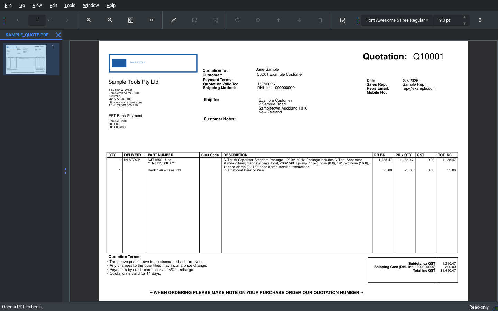
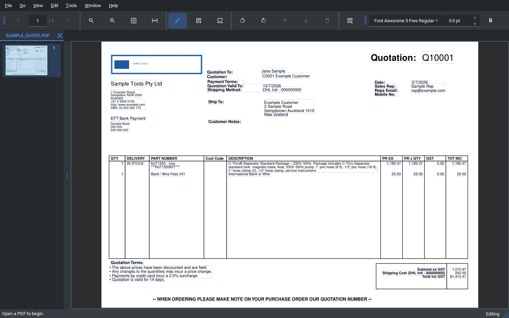

What it does
- 📄 View & navigate PDFs in tabs, with zoom, thumbnails and printing
- ✏️ Edit existing text and images directly on the page
- 🔎 OCR scanned / image-only PDFs (bundled Tesseract) to search & extract text
- 🗂️ Merge, split, rotate, delete, reorder and insert pages
- 🖍️ Highlights and review comments; snapshot undo/redo
- 🔒 100% offline & private — nothing is uploaded
Frequently asked questions
Is PDF Editor free?
Yes — free and open-source under AGPL-3.0. No paid tier, no subscription.
Does it work offline?
Yes. It runs entirely on your computer; no PDF is uploaded anywhere.
Can it edit text in an existing PDF?
Yes — click text to edit it in place, and move/resize/replace/delete images.
Can it read scanned PDFs?
Yes — built-in OCR (bundled Tesseract) makes scanned/outlined PDFs searchable.
Which platforms are supported?
Windows (x64) is packaged and tested. Building from source elsewhere may work but isn’t packaged.
Is it an Adobe Acrobat replacement?
It covers everyday view/edit/organise/print + OCR. It does not do form filling, digital signatures, or full text reflow.
Built with
PyMuPDFPySide6 / QtTesseract OCRPython 3.13AGPL-3.0